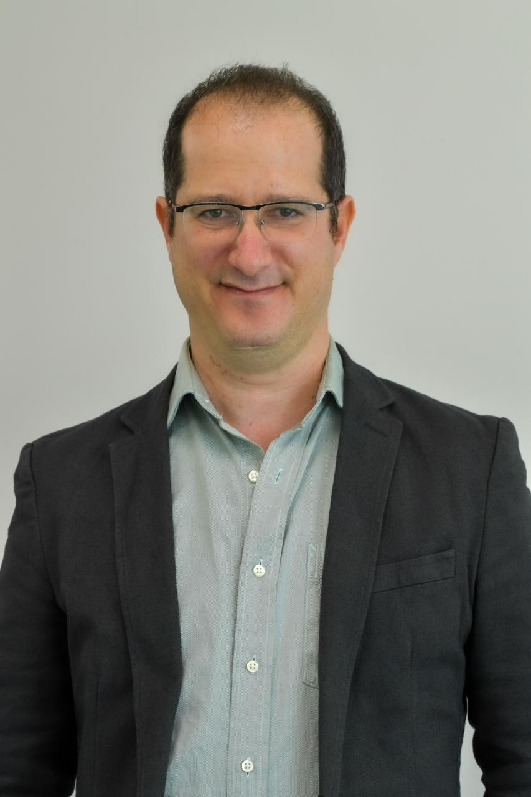

University of Haifa2024
PhD, Information & Knowledge ManagementHaifa, Israel
- Dissertation: Online Deliberation and Data Journalism
- Advisor: Prof. Sheizaf Rafaeli
Computational Social Scientist
I study when and how information environments enable collective engagement in online discourse, combining game-theoretic modeling with large-scale computational analysis.

I study how information environments shape who participates in online public discourse and under what conditions coordination happens, combining game theory, causal identification, and computational methods applied to large-scale online news commenting data. My research sits at the intersection of information systems, economics, and computational social science. My primary empirical setting is large-scale online news commenting, where I analyze how journalistic information design influences the coordination dynamics that precede network formation. Methodologically, I combine formal modeling (global games, rational inattention, strategic complementarities) with causal identification strategies and text-based computational methods applied to corpora of millions of observations.
I completed my PhD at the University of Haifa under Prof. Sheizaf Rafaeli. My background spans philosophy, education, healthcare analytics, and official statistics, fields that have each sharpened a different part of how I think about data, rationality, and evidence. I approach empirical questions with a commitment to both theoretical grounding and methodological rigor, and I am drawn to research settings where the stakes for democratic participation are real.